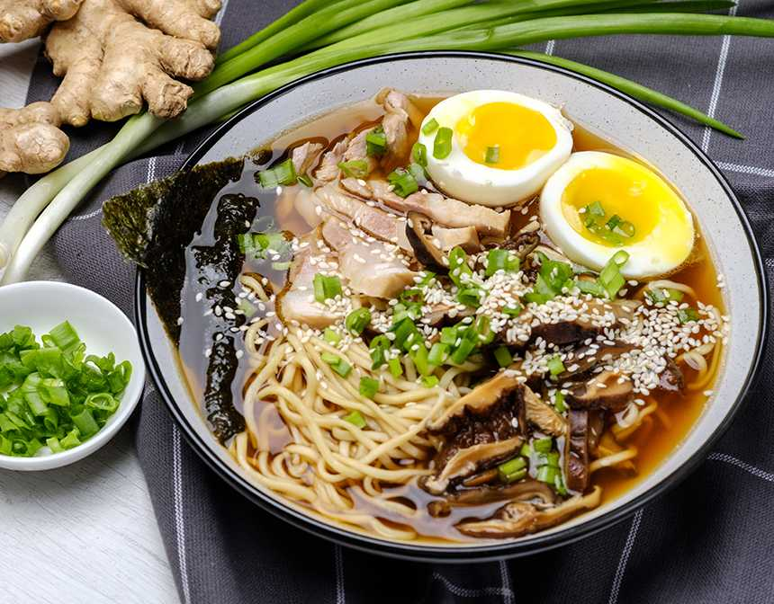
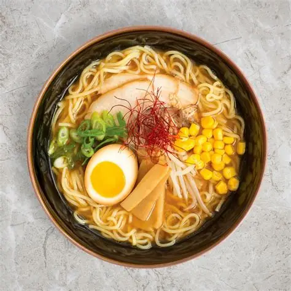

Popular Ramen Flavors
Shoyu (Soy Sauce)
A savory broth with soy sauce base, clear and brown in color, classic Japanese ramen flavor.
Miso
A hearty, slightly sweet broth with rich fermented soybean flavor, perfect for colder days.
Tonkotsu (Pork Bone)
A creamy, rich, and fatty pork bone broth that is deeply satisfying and flavorful.